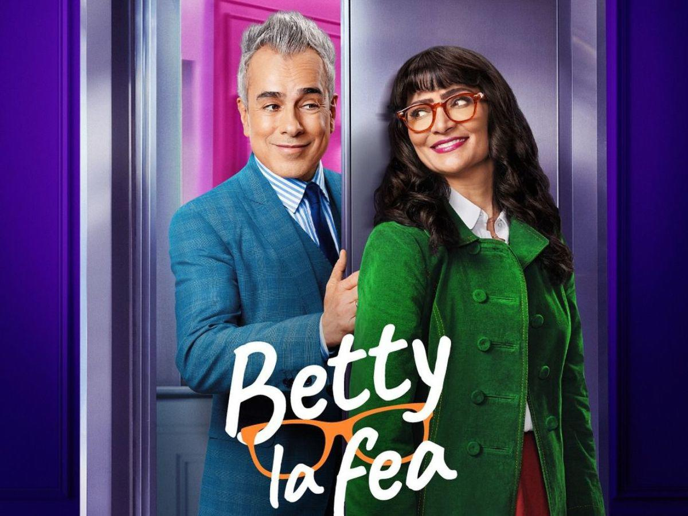
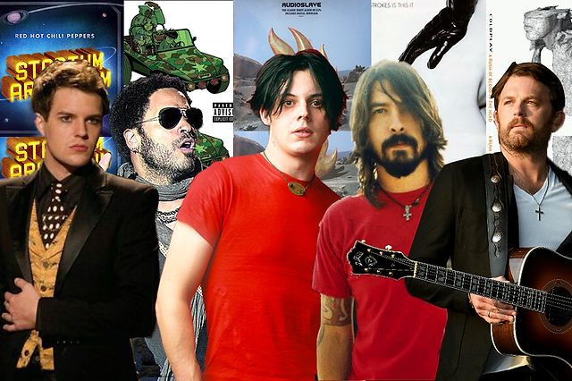

ENTRETENIMIENTO
Aquí encontraras la información más relevante sobre entretenimiento

Pelicula Sobre la Vida de Britney Spears
Universal Pictures se prepara para llevar la fascinante vida de Britney Spears a la gran pantalla. Esta esperada película biográfica promete ser un viaje a través de la meteórica carrera de la "Princesa del Pop", desde sus humildes comienzos hasta su ascenso a la fama mundial. Los fans están ansiosos por ver cómo se retratarán los éxitos y desafíos que han marcado la vida de la cantante, incluyendo aspectos tan controvertidos como su tutela legal y su relación con los medios. Sin duda, esta película será un evento imperdible para todos aquellos que han seguido la carrera de Britney Spears..

¡Betty está de vuelta! Un análisis de los personajes en la nueva versión
La noticia ha conmocionado a millones de fans en todo el mundo: ¡Betty, la fea, está de vuelta! La icónica telenovela colombiana que conquistó corazones hace más de dos décadas ha regresado con una nueva versión, trayendo consigo tanto rostros conocidos como nuevos personajes que prometen darle un giro inesperado a la historia.
Uno de los mayores atractivos de esta nueva versión es el regreso de gran parte del elenco original. Ver a Ana María Orozco y Jorge Enrique Abello retomar sus roles como Betty y Armando, respectivamente, ha sido un regalo para los fanáticos que crecieron viendo la telenovela. Otros personajes icónicos como Marcela Valencia, Hugo Lombardi y Patricia Fernández también están de vuelta, aportando toda su experiencia y carisma a la historia.
La unión hace la fuerza: La solidaridad en el rock alternativo
El rock alternativo siempre se ha caracterizado por su espíritu rebelde y su búsqueda constante de nuevas sonoridades. Pero más allá de la música, este género ha demostrado ser un espacio de unión y solidaridad entre artistas, sellos discográficos y fans.
Desde sus inicios, el rock alternativo ha sido un refugio para aquellos que se sentían diferentes o marginados. Esta sensación compartida de pertenecer a un grupo ha fomentado un fuerte sentido de comunidad entre los fans y los músicos. Festivales como Lollapalooza y Reading and Leeds se convirtieron en epicentros donde miles de personas se reunían para celebrar su amor por la música y compartir experiencias.
